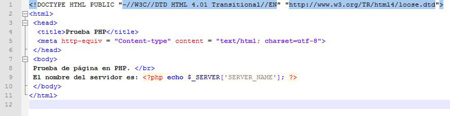

Cuando la web comenzó a evolucionar desde las páginas web estáticas a las dinámicas, una de las primeras tecnologías que se utilizaron fue la ejecución de código utilizando CGI. Los guiones CGI son programas estándar, que se ejecutan por el sistema operativo, pero que generan como salida el código HTML de una página web. Por tanto, los guiones CGI deben contener, mezcladas dentro de su código, sentencias encargadas de generar la página web.
Por ejemplo, si quieres generar una página web utilizando CGI a partir de un guión de sentencias en Linux, tienes que hacer algo como lo siguiente:

Esta es una de las principales formas de realizar páginas web dinámicas: integrar las etiquetas HTML en el código de los programas. Es decir, los programas como el guión anterior incluyen dentro de su código sentencias de salida (echo en el caso anterior) que son las que incluyen el código HTML de la página web que se obtendrá cuando se ejecuten. De esta forma se programan, por ejemplo, los guiones CGI y los servlets.
Un enfoque distinto consiste en integrar el código del programa en medio de las etiquetas HTML de la página web. De esta forma, el contenido que no varía de la página se puede introducir directamente en HTML, y el lenguaje de programación se utilizará para todo aquello que pueda variar de forma dinámica. Por ejemplo, puedes incluir dentro de una página HTML un pequeño código en lenguaje PHP que muestre el nombre del servidor:

Esta metodología de programación es la que se emplea en los lenguajes ASP, PHP y con las páginas JSP de Java EE.
Los servlets de Java EE se diferencian de las páginas JSP en que los primeros son programas Java compilados y almacenados en el contenedor de servlets. Sin embargo, las páginas JSP contienen código Java embebido en lenguaje HTML y se almacenan de forma individual en el servidor web. La primera vez que se necesita una página JSP, se convierte a un servlet y éste se guarda para ser utilizado en posteriores llamadas a la misma página.
En la arquitectura ASP.Net, cada página se divide en dos ficheros: uno contiene las etiquetas HTML y otro el código en el lenguaje de programación utilizado. De esta forma se logra cierta independencia entre el aspecto de la aplicación y la gestión del contenido dinámico. A partir de esos ficheros se obtiene un código intermedio (MSIL en la terminología de la plataforma) que es lo que almacena el servidor.